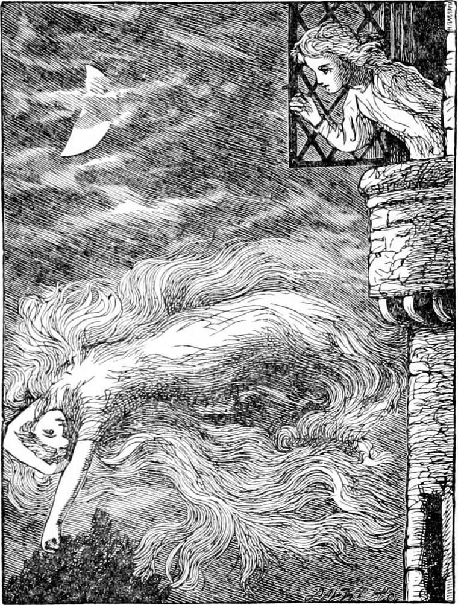

THE next night Diamond was seated by his open window, with his head on his hand, rather tired, but so eagerly waiting for the promised visit that he was afraid he could not sleep. But he started suddenly, and found that he had been already asleep. He rose, and looking out of the window saw something white against his beech-tree. It was North Wind. She was holding by one hand to a top branch. Her hair and her garments went floating away behind her over the tree, whose top was swaying about while the others were still.
“Are you ready, Diamond?” she asked.
“Yes,” answered Diamond, “quite ready.”
In a moment she was at the window, and her arms came in and took him. She sailed away so swiftly that he could at first mark nothing but the speed with which the clouds above and the dim earth below went rushing past. But soon he began to see that the sky was very lovely, with mottled clouds all about the moon, on which she threw faint colours like those of mother-of-pearl, or an opal. The night was warm, and in the lady's arms he did not feel the wind which down below was making waves in the ripe corn, and ripples on the rivers and lakes. At length they descended on the side of an open earthy hill, just where, from beneath a stone, a spring came bubbling out.
“I am going to take you along this little brook,” said North Wind. “I am not wanted for anything else to-night, so I can give you a treat.”

She stooped over the stream and holding Diamond down close to the surface of it, glided along level with its flow as it ran down the hill. And the song of the brook came up into Diamond's ears, and grew and grew and changed with every turn. It seemed to Diamond to be singing the story of its life to him. And so it was. It began with a musical tinkle which changed to a babble and then to a gentle rushing. Sometimes its song would almost cease, and then break out again, tinkle, babble, and rush, all at once. At the bottom of the hill they came to a small river, into which the brook flowed with a muffled but merry sound. Along the surface of the river, darkly clear below them in the moonlight, they floated; now, where it widened out into a little lake, they would hover for a moment over a bed of water-lilies, and watch them swing about, folded in sleep, as the water on which they leaned swayed in the presence of North Wind; and now they would watch the fishes asleep among their roots below. Sometimes she would hold Diamond over a deep hollow curving into the bank, that he might look far into the cool stillness. Sometimes she would leave the river and sweep across a clover-field. The bees were all at home, and the clover was asleep. Then she would return and follow the river. It grew wider and wider as it went. Now the armies of wheat and of oats would hang over its rush from the opposite banks; now the willows would dip low branches in its still waters; and now it would lead them through stately trees and grassy banks into a lovely garden, where the roses and lilies were asleep, the tender flowers quite folded up, and only a few wide-awake and sending out their life in sweet, strong odours. Wider and wider grew the stream, until they came upon boats lying along its banks, which rocked a little in the flutter of North Wind's garments. Then came houses on the banks, each standing in a lovely lawn, with grand trees; and in parts the river was so high that some of the grass and the roots of some of the trees were under water, and Diamond, as they glided through between the stems, could see the grass at the bottom of the water. Then they would leave the river and float about and over the houses, one after another—beautiful rich houses, which, like fine trees, had taken centuries to grow. There was scarcely a light to be seen, and not a movement to be heard: all the people in them lay fast asleep.
“What a lot of dreams they must be dreaming!” said Diamond.
“Yes,” returned North Wind. “They can't surely be all lies—can they?”
“I should think it depends a little on who dreams them,” suggested Diamond.
“Yes,” said North Wind. “The people who think lies, and do lies, are very likely to dream lies. But the people who love what is true will surely now and then dream true things. But then something depends on whether the dreams are home-grown, or whether the seed of them is blown over somebody else's garden-wall. Ah! there's some one awake in this house!”
They were floating past a window in which a light was burning. Diamond heard a moan, and looked up anxiously in North Wind's face.
“It's a lady,” said North Wind. “She can't sleep for pain.”
“Couldn't you do something for her?” said Diamond.
“No, I can't. But you could.”
“What could I do?”
“Sing a little song to her.”
“She wouldn't hear me.”
“I will take you in, and then she will hear you.”
“But that would be rude, wouldn't it? You can go where you please, of course, but I should have no business in her room.”
“You may trust me, Diamond. I shall take as good care of the lady as of you. The window is open. Come.”
By a shaded lamp, a lady was seated in a white wrapper, trying to read, but moaning every minute. North Wind floated behind her chair, set Diamond down, and told him to sing something. He was a little frightened, but he thought a while, and then sang:—
And the moon's in the sky;
But the sun will come up,
And the moon be laid by.
But it is not dead;
When the morning shines,
It will lift its head.
It will die—no, no;
It will only hide
From the frost and the snow.
Sure is the sun;
The night and the winter
Are shadows that run.
The lady never lifted her eyes from her book, or her head from her hand.
As soon as Diamond had finished, North Wind lifted him and carried him away.
“Didn't the lady hear me?” asked Diamond when they were once more floating down the river.
“Oh, yes, she heard you,” answered North Wind.
“Was she frightened then?”
“Oh, no.”
“Why didn't she look to see who it was?”
“She didn't know you were there.”
“How could she hear me then?”
“She didn't hear you with her ears.”
“What did she hear me with?”
“With her heart.”
“Where did she think the words came from?”
“She thought they came out of the book she was reading. She will search all through it to-morrow to find them, and won't be able to understand it at all.”
“Oh, what fun!” said Diamond. “What will she do?”
“I can tell you what she won't do: she'll never forget the meaning of them; and she'll never be able to remember the words of them.”
“If she sees them in Mr. Raymond's book, it will puzzle her, won't it?”
“Yes, that it will. She will never be able to understand it.”
“Until she gets to the back of the north wind,” suggested Diamond.
“Until she gets to the back of the north wind,” assented the lady.
“Oh!” cried Diamond, “I know now where we are. Oh! do let me go into the old garden, and into mother's room, and Diamond's stall. I wonder if the hole is at the back of my bed still. I should like to stay there all the rest of the night. It won't take you long to get home from here, will it, North Wind?”
“No,” she answered; “you shall stay as long as you like.”
“Oh, how jolly,” cried Diamond, as North Wind sailed over the house with him, and set him down on the lawn at the back.
Diamond ran about the lawn for a little while in the moonlight. He found part of it cut up into flower-beds, and the little summer-house with the coloured glass and the great elm-tree gone. He did not like this, and ran into the stable. There were no horses there at all. He ran upstairs. The rooms were empty. The only thing left that he cared about was the hole in the wall where his little bed had stood; and that was not enough to make him wish to stop. He ran down the stair again, and out upon the lawn. There he threw himself down and began to cry. It was all so dreary and lost!
“I thought I liked the place so much,” said Diamond to himself, “but I find I don't care about it. I suppose it's only the people in it that make you like a place, and when they're gone, it's dead, and you don't care a bit about it. North Wind told me I might stop as long as I liked, and I've stopped longer already. North Wind!” he cried aloud, turning his face towards the sky.
The moon was under a cloud, and all was looking dull and dismal. A star shot from the sky, and fell in the grass beside him. The moment it lighted, there stood North Wind.
“Oh!” cried Diamond, joyfully, “were you the shooting star?”
“Yes, my child.”
“Did you hear me call you then?”
“Yes.”
“So high up as that?”
“Yes; I heard you quite well.”
“Do take me home.”
“Have you had enough of your old home already?”
“Yes, more than enough. It isn't a home at all now.”
“I thought that would be it,” said North Wind. “Everything, dreaming and all, has got a soul in it, or else it's worth nothing, and we don't care a bit about it. Some of our thoughts are worth nothing, because they've got no soul in them. The brain puts them into the mind, not the mind into the brain.”
“But how can you know about that, North Wind? You haven't got a body.”
“If I hadn't you wouldn't know anything about me. No creature can know another without the help of a body. But I don't care to talk about that. It is time for you to go home.”
So saying, North Wind lifted Diamond and bore him away.